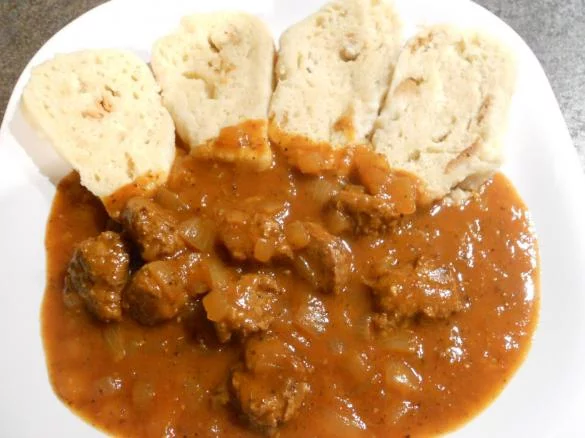

Tradiční maďarsko-český guláš z vepřového masa s kysaným zelím, smetanou a kořením. Výrazná a sytá chuť, která zahřeje a zasytí.
Cibuli a česnek oloupeme, cibuli nakrájíme nadrobno a česnek na kousky. Maso nakrájíme na kostky, osolíme a opepříme.
Na sádle osmažíme cibuli dorůžova, přidáme maso a česnek a restujeme, dokud se maso nezatáhne.
Přidáme kmín a mletou papriku, krátce zpěníme a ihned podlijeme vodou, aby se paprika nespálila.
Přidáme zelí bez nálevu (část nálevu lze ponechat dle chuti), bobkový list a chilli papričku. Dusíme asi 30 minut.
V troše vody rozmícháme mouku a za stálého míchání guláš zahustíme. Provaříme asi 20 minut, aby se mouka provařila.
Vmícháme smetanu, krátce povaříme a podle chuti dochutíme solí, pepřem a případně cukrem.
Podáváme s chlebem nebo houskovým knedlíkem.